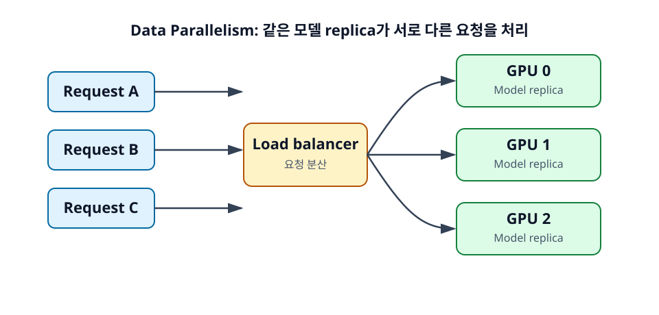

9장. Data Parallelism¶
Data Parallelism은 가장 직관적인 추론 확장 방식이다. 같은 모델을 여러 GPU에 각각 올리고, 서로 다른 요청을 서로 다른 GPU가 처리하게 한다. 모델 replica가 여러 개 생기는 구조라고 생각하면 된다.

학습 목표¶
- Data Parallel의 구조를 이해한다.
- 어떤 serving 상황에서 적합한지 판단한다.
- Data Parallel의 한계를 설명한다.
9.1 Data Parallel의 정의¶
Data Parallel은 요청 단위로 일을 나눈다. GPU 0은 사용자 A의 요청을 처리하고, GPU 1은 사용자 B의 요청을 처리하고, GPU 2는 사용자 C의 요청을 처리하는 식이다. 각 GPU는 모델 전체를 가지고 있으므로, 요청 하나를 처리하는 과정에서 GPU 간 통신이 거의 필요 없다.
9.1.1 모델 replica를 여러 GPU에 올린다¶
Data Parallel에서는 각 GPU에 같은 model weights가 올라간다. 예를 들어 4장의 GPU가 있다면 같은 모델 server worker를 4개 띄우고, 앞단 load balancer가 요청을 분산할 수 있다. 이때 각 worker는 독립적으로 prefill, decode, KV cache 관리를 수행한다.
이 구조는 단순하고 안정적이다. 한 GPU에서 문제가 생겨도 다른 replica가 계속 요청을 처리할 수 있고, traffic이 늘어나면 replica 수를 늘리는 방식으로 확장할 수 있다.
9.1.2 서로 다른 요청을 서로 다른 GPU가 처리한다¶
Data Parallel은 단일 요청을 여러 GPU로 쪼개 빠르게 만드는 방식이 아니다. 요청 A는 GPU 0에서 끝까지 처리되고, 요청 B는 GPU 1에서 끝까지 처리된다. 따라서 단일 요청 latency가 아니라 전체 요청 처리량을 늘리는 데 초점이 있다.
예를 들어 팀 내부 챗봇에서 여러 사용자가 동시에 짧은 질문을 보내는 상황이라면 Data Parallel이 잘 맞는다. 각 요청은 독립적이고, 모델이 GPU 한 장에 들어가며, 요청 수가 많기 때문이다.
9.1.3 가장 직관적인 throughput 확장 방식이다¶
Throughput은 단위 시간에 처리할 수 있는 일의 양이다. Data Parallel은 replica 수를 늘려 throughput을 확장한다. 한 GPU가 초당 10개의 짧은 요청을 처리할 수 있다면, 이상적으로 4개 replica는 더 많은 요청을 처리할 수 있다.
물론 완전히 선형으로 증가하지는 않는다. Load balancing, queueing, tokenizer CPU 병목, 네트워크, 요청 길이 편차가 영향을 준다. 그래도 구조가 단순해 첫 번째 확장 전략으로 자주 선택된다.
9.2 언제 Data Parallel이 적합한가¶
Data Parallel은 모델이 GPU 하나에 들어가고 요청량이 많은 경우에 특히 적합하다. GPU 간 통신을 최소화하고 싶을 때도 좋은 선택이다.
9.2.1 모델이 GPU 하나에 들어가는 경우¶
각 GPU가 모델 전체를 가져야 하므로, 모델이 GPU 한 장에 들어가야 한다. 7B 또는 quantized 13B 모델처럼 단일 GPU에서 serving 가능한 모델은 Data Parallel로 replica를 늘리기 쉽다.
반대로 70B dense model이 GPU 한 장에 들어가지 않는다면 Data Parallel만으로는 해결되지 않는다. 이 경우 먼저 Tensor Parallel이나 Pipeline Parallel로 모델 하나를 여러 GPU에 나누어 올린 뒤, 그 묶음을 다시 Data Parallel replica로 여러 개 둘 수 있다.
9.2.2 요청 수가 많은 경우¶
Data Parallel은 많은 사용자가 독립적인 요청을 보내는 workload에 잘 맞는다. 예를 들어 짧은 Q&A, 분류, 간단한 요약, 내부 도우미 챗봇처럼 요청이 많고 각 요청이 독립적이라면 replica를 늘리는 방식이 효과적이다.
요청 수가 적고 단일 요청이 매우 긴 경우에는 Data Parallel만으로 latency를 줄이기 어렵다. 이때는 long-context 최적화나 context parallelism을 검토해야 한다.
9.2.3 GPU 간 통신을 줄이고 싶은 경우¶
Tensor Parallel이나 Context Parallel은 GPU 간 통신이 필요하다. Data Parallel은 각 요청이 한 replica 안에서 처리되므로 GPU 간 통신이 상대적으로 적다. 이 점은 interconnect가 빠르지 않은 환경에서 장점이 된다.
클라우드에서 여러 GPU가 같은 고속 interconnect로 묶여 있지 않거나, 여러 노드에 replica를 흩어 배치해야 하는 경우 Data Parallel은 운영이 쉽다.
9.3 Data Parallel의 한계¶
Data Parallel은 단순하지만 모든 문제를 해결하지는 못한다. 특히 model weight 메모리 문제와 단일 요청 latency 문제에는 한계가 있다.
9.3.1 각 GPU가 모델 전체를 가져야 한다¶
각 replica가 모델 전체를 저장하므로 weight 메모리는 줄어들지 않는다. GPU 4장을 사용하더라도 각 GPU에는 같은 weight가 들어간다. 총 시스템 메모리는 늘어나지만, 단일 GPU의 모델 적재 한계는 그대로다.
따라서 모델이 GPU 한 장에 들어가지 않는 문제는 Data Parallel이 아니라 Tensor Parallel, Pipeline Parallel, quantization으로 먼저 해결해야 한다.
9.3.2 큰 모델에는 단독으로 쓰기 어렵다¶
큰 모델을 serving할 때는 보통 TP 또는 PP로 모델 하나를 여러 GPU에 나눈 뒤, 그 GPU group을 하나의 replica처럼 본다. 예를 들어 8 GPU로 70B 모델 하나를 TP로 띄우고, 이런 8 GPU group을 여러 개 만들어 Data Parallel처럼 운영할 수 있다.
즉 대규모 시스템에서 Data Parallel은 단독 전략이라기보다 다른 병렬화와 조합되는 경우가 많다.
9.3.3 Load balancing이 필요하다¶
Data Parallel에서는 요청을 어느 replica에 보낼지 결정해야 한다. 단순 round-robin은 구현이 쉽지만, LLM 요청은 길이가 제각각이라 부하가 고르게 나뉘지 않을 수 있다. 긴 RAG 요청 하나가 특정 replica를 오래 점유할 수 있다.
좋은 load balancer는 replica별 queue length, 현재 처리 중인 token 수, GPU memory pressure, 요청 유형을 고려할 수 있다. 최소한 운영자는 긴 요청과 짧은 요청이 섞일 때 tail latency가 악화될 수 있음을 알아야 한다.
정리¶
Data Parallel은 같은 모델 replica를 여러 GPU에 올리고 요청을 나누는 방식이다. 구조가 단순하고 GPU 간 통신이 적어 throughput 확장에 유리하다. 하지만 각 GPU가 모델 전체를 가져야 하므로 큰 모델의 weight 메모리 문제를 해결하지 못하고, 단일 요청 latency를 직접 줄이는 방식도 아니다.
점검 질문¶
- Data Parallel은 model weight 메모리 문제를 해결하는가?
- Data Parallel에서 load balancing이 필요한 이유는 무엇인가?
다음 장으로¶
다음 장에서는 모델 내부의 큰 행렬 계산을 여러 GPU가 나누어 수행하는 Tensor Parallelism을 다룬다.